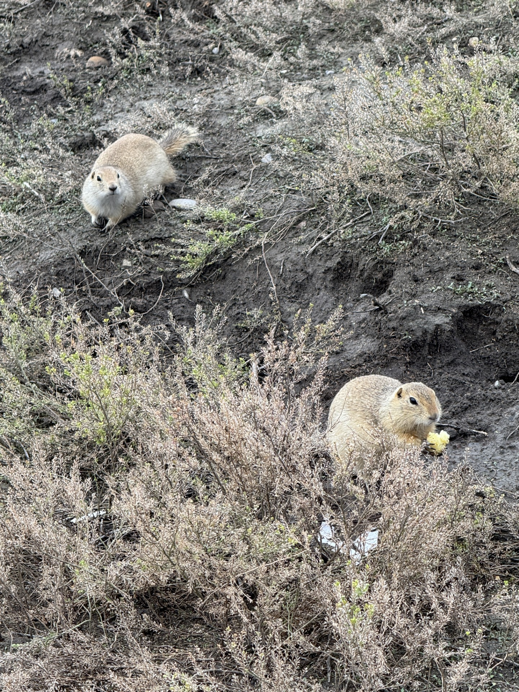

!! - Welcome to my webpage - !!
!! - Welcome to my webpage - !!
Hi I'm Kate!! I'm a 4th year Automation Engineering student at McMaster Univeristy. I currently reside in Hamilton but relocate often in the search of new learning opportunities. I moved to Calgary, AB for my previous co-op, and while I was there I made a lot of prairie dog friends (pictured below).
I'm going back to Alberta again this spring for an automation student co-op opportunity at CNRL!
#OilAndGas
In my spare time, I enjoy travelling, trying new foods, working out, and scrolling reels.
